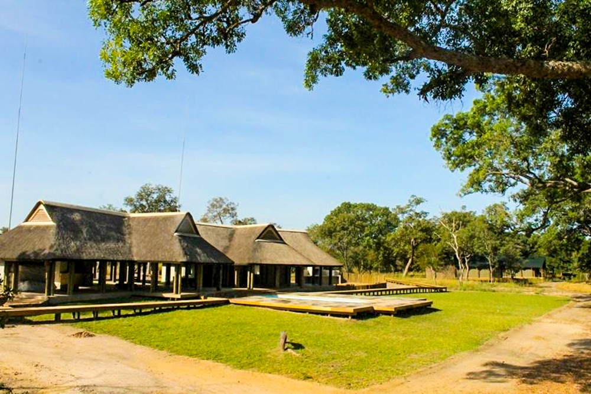
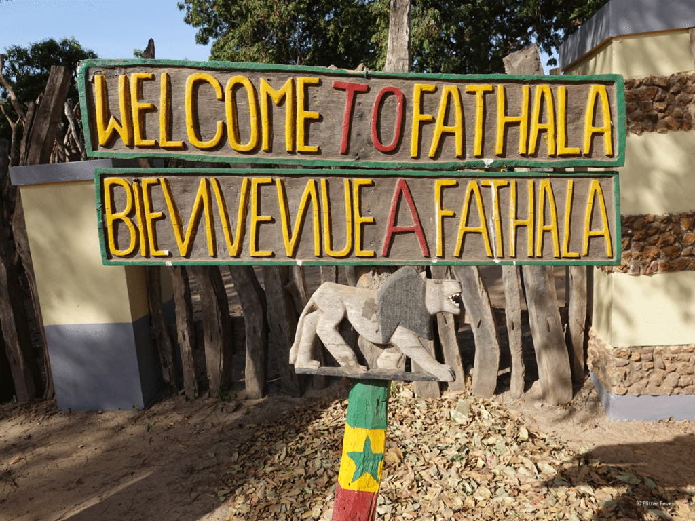

La Réserve Animale de Fathala s'étend sur 6000 hectares d'une biodiversité luxuriante, offrant un paysage africain classique d'une beauté saisissante.
Notre territoire est un sanctuaire où la savane arborée alterne avec des zones de forêt dense et classée, créant un refuge essentiel pour la faune. Cette mosaïque d'habitats permet à nos espèces (du Rhinocéros Blanc à la Girafe de Kordofan) de s'épanouir dans un environnement qui rappelle la brousse africaine originelle.
Stratégiquement située à la frontière avec la Gambie, Fathala agit comme un corridor écologique vital en Afrique de l'Ouest. En explorant nos pistes, vous découvrirez un écosystème géré avec soin, conçu pour la conservation et l'immersion totale.
Chaque lever de soleil sur ce vaste territoire vous rappelle que vous êtes au cœur d'une nature puissante et préservée.
Au cœur de nos 6000 hectares de savane et de forêt préservée, la Réserve de Fathala n'est pas seulement un lieu, c'est une invitation à l'émerveillement. Ici, le Sénégal vous offre le safari que vous avez toujours rêvé : des matinées vibrantes passées en 4x4 à traquer le Rhinocéros Blanc ou à admirer les élégantes Girafes de Kordofan, jusqu'aux expériences exceptionnelles comme la marche guidée aux côtés des lions. Loin des foules, chaque moment est une rencontre authentique, une immersion totale dans la faune africaine, enveloppée par la chaleur et l'hospitalité légendaire de la Téranga sénégalaise
La Téranga est l'âme du Sénégal, un mot qui transcende la simple hospitalité pour incarner la générosité, le partage et la chaleur de l'accueil. À Fathala, cette philosophie est au cœur de votre séjour. Elle se reflète dans le sourire de notre personnel, l'attention portée à votre confort et le désir sincère de partager avec vous la beauté de notre terre. Préparez-vous à vous sentir non pas comme un visiteur, mais comme un invité d'honneur dans notre grande famille.